Working with Regression Trees in Python
Objectives
Decision Trees are one of the most popular approaches to supervised machine learning. Decison Trees use an inverted tree-like structure to model the relationship between independent variables and a dependent variable. A tree with a continuous dependent variable is known as a Regression Tree. In this script, i will :
- Load, explore and prepare iris data
- Build a Regression Tree model
- Visualize the structure of the Regression Tree
- Prune the Regression Tree
1. Load the iris Data
from sklearn.datasets import load_iris
iris| Sepal.Length | Sepal.Width | Petal.Length | Petal.Width | Species | |
|---|---|---|---|---|---|
| 0 | 5.1 | 3.5 | 1.4 | 0.2 | setosa |
| 1 | 4.9 | 3.0 | 1.4 | 0.2 | setosa |
| 2 | 4.7 | 3.2 | 1.3 | 0.2 | setosa |
| 3 | 4.6 | 3.1 | 1.5 | 0.2 | setosa |
| 4 | 5.0 | 3.6 | 1.4 | 0.2 | setosa |
| ... | ... | ... | ... | ... | ... |
| 145 | 6.7 | 3.0 | 5.2 | 2.3 | virginica |
| 146 | 6.3 | 2.5 | 5.0 | 1.9 | virginica |
| 147 | 6.5 | 3.0 | 5.2 | 2.0 | virginica |
| 148 | 6.2 | 3.4 | 5.4 | 2.3 | virginica |
| 149 | 5.9 | 3.0 | 5.1 | 1.8 | virginica |
150 rows × 5 columns
2. Explore the Data
iris.info()<class 'pandas.core.frame.DataFrame'>
RangeIndex: 150 entries, 0 to 149
Data columns (total 5 columns):
# Column Non-Null Count Dtype
--- ------ -------------- -----
0 Sepal.Length 150 non-null float64
1 Sepal.Width 150 non-null float64
2 Petal.Length 150 non-null float64
3 Petal.Width 150 non-null float64
4 Species 150 non-null object
dtypes: float64(4), object(1)
memory usage: 6.0+ KBiris.describe()| Sepal.Length | Sepal.Width | Petal.Length | Petal.Width | |
|---|---|---|---|---|
| count | 150.000000 | 150.000000 | 150.000000 | 150.000000 |
| mean | 5.843333 | 3.057333 | 3.758000 | 1.199333 |
| std | 0.828066 | 0.435866 | 1.765298 | 0.762238 |
| min | 4.300000 | 2.000000 | 1.000000 | 0.100000 |
| 25% | 5.100000 | 2.800000 | 1.600000 | 0.300000 |
| 50% | 5.800000 | 3.000000 | 4.350000 | 1.300000 |
| 75% | 6.400000 | 3.300000 | 5.100000 | 1.800000 |
| max | 7.900000 | 4.400000 | 6.900000 | 2.500000 |
%matplotlib inline
from matplotlib import pyplot as plt
import seaborn as snsay=sns.boxplot(data = iris, x='Species', y = 'Sepal.Length')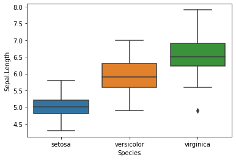
ax=sns.boxplot(data = iris, x='Species', y = 'Sepal.Width')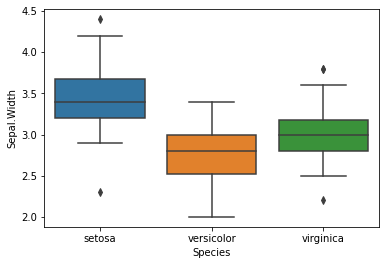
ax=sns.boxplot(data = iris, x='Species', y = 'Petal.Length')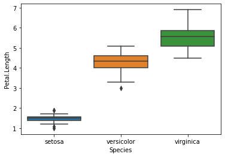
ax=sns.boxplot(data = iris, x='Species', y = 'Petal.Width')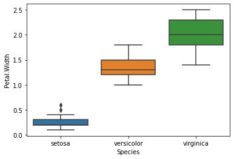
ax = sns.scatterplot(data = iris,
x = 'Sepal.Length',
y = 'Sepal.Width',
hue = 'Species',
style = 'Species',
s = 150)
ax = plt.legend(bbox_to_anchor = (1.02, 1), loc = 'upper left')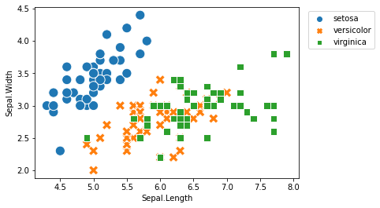
ax = sns.scatterplot(data = iris,
x = 'Petal.Length',
y = 'Petal.Width',
hue = 'Species',
style = 'Species',
s = 150)
ax = plt.legend(bbox_to_anchor = (1.02, 1), loc = 'upper left')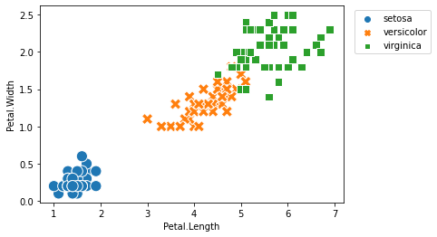
3. Prepare the Data
import pandas as pdy=iris[['Sepal.Width']]X=iris[['Species','Sepal.Length', 'Petal.Length', 'Petal.Width']]from sklearn.model_selection import train_test_split
X_train, X_test, y_train, y_test = train_test_split(X, y,
train_size = 0.6,
stratify = X['Species'],
random_state = 1234)X_train.shape, X_test.shape((90, 4), (60, 4))X_train.head()| Species | Sepal.Length | Petal.Length | Petal.Width | |
|---|---|---|---|---|
| 61 | versicolor | 5.9 | 4.2 | 1.5 |
| 79 | versicolor | 5.7 | 3.5 | 1.0 |
| 8 | setosa | 4.4 | 1.4 | 0.2 |
| 140 | virginica | 6.7 | 5.6 | 2.4 |
| 81 | versicolor | 5.5 | 3.7 | 1.0 |
X_train = pd.get_dummies(X_train)
X_train.head()| Sepal.Length | Petal.Length | Petal.Width | Species_setosa | Species_versicolor | Species_virginica | |
|---|---|---|---|---|---|---|
| 61 | 5.9 | 4.2 | 1.5 | 0 | 1 | 0 |
| 79 | 5.7 | 3.5 | 1.0 | 0 | 1 | 0 |
| 8 | 4.4 | 1.4 | 0.2 | 1 | 0 | 0 |
| 140 | 6.7 | 5.6 | 2.4 | 0 | 0 | 1 |
| 81 | 5.5 | 3.7 | 1.0 | 0 | 1 | 0 |
X_test = pd.get_dummies(X_test)
X_test.head()| Sepal.Length | Petal.Length | Petal.Width | Species_setosa | Species_versicolor | Species_virginica | |
|---|---|---|---|---|---|---|
| 60 | 5.0 | 3.5 | 1.0 | 0 | 1 | 0 |
| 132 | 6.4 | 5.6 | 2.2 | 0 | 0 | 1 |
| 75 | 6.6 | 4.4 | 1.4 | 0 | 1 | 0 |
| 119 | 6.0 | 5.0 | 1.5 | 0 | 0 | 1 |
| 46 | 5.1 | 1.6 | 0.2 | 1 | 0 | 0 |
4. Train and Evaluate the Regression Tree
from sklearn.tree import DecisionTreeRegressor
regressor = DecisionTreeRegressor(random_state = 1234)model = regressor.fit(X_train, y_train)model.score(X_test, y_test)0.33023514005921195y_test_pred = model.predict(X_test)
y_test_predarray([2.3 , 2.8 , 3.2 , 2.5 , 3.4 , 3. , 3.4 , 3.1 , 3.1 , 3.1 , 2.9 ,
3.1 , 2.5 , 3.2 , 3.5 , 2.8 , 3.3 , 3.6 , 3.6 , 2.8 , 3. , 3.4 ,
2.6 , 3.1 , 2.3 , 2.2 , 3.2 , 2.8 , 3. , 2.5 , 3. , 3. , 3.2 ,
3.1 , 3.1 , 3.2 , 3.4 , 3.6 , 2.3 , 3.2 , 2.8 , 3.1 , 3. , 3.8 ,
3. , 3.4 , 3.4 , 3.6 , 3.8 , 3.45, 2.9 , 2.7 , 2.9 , 3.4 , 2.3 ,
3. , 2.9 , 3.4 , 2.9 , 2.9 ])from sklearn.metrics import mean_absolute_error
mean_absolute_error(y_test, y_test_pred)0.280833333333333435. Visualize the Regression Tree
from sklearn import tree
plt.figure(figsize = (15,15))
tree.plot_tree(model,
feature_names = list(X_train.columns),
filled = True);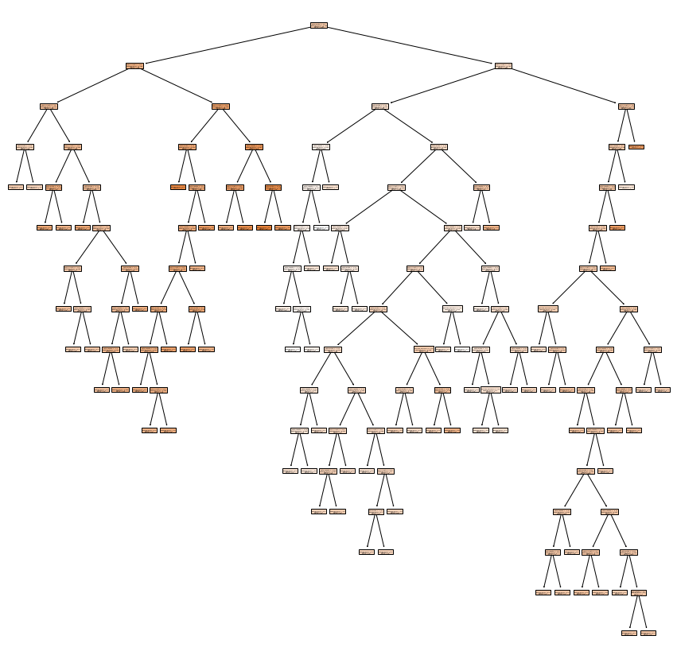
plt.figure(figsize = (15,15))
tree.plot_tree(model,
feature_names = list(X_train.columns),
filled = True,
max_depth = 1);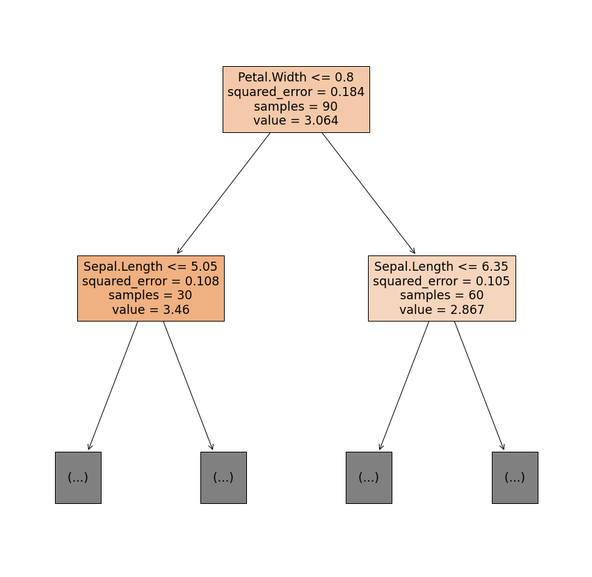
importance = model.feature_importances_
importancearray([0.33538054, 0.10600708, 0.54609818, 0. , 0.01251419,
0. ])feature_importance = pd.Series(importance, index = X_train.columns)
feature_importance.sort_values().plot(kind = 'bar')
plt.ylabel('Importance');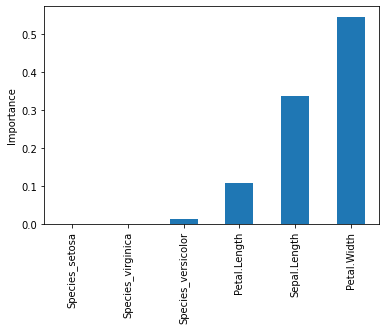
6. Prune the Regression Tree
Pruning is use in decision trees training to avoid overfitting. It's can happen if we allow it to grow to its max depth and in another hand we can also stop the it earlier. To avoid overfitting, we can apply early stopping rules know as pre-pruning. Another option to avoid overfitting is to apply post-pruning (sometimes just called pruning). If you want to learn about these two methods, check these articles, for pre-pruning, and post-pruning.
model.score(X_train, y_train)0.9972869047938048model.score(X_test, y_test)0.33023514005921195Let's get the list of effective alphas for the training data.
path = regressor.cost_complexity_pruning_path(X_train, y_train)
ccp_alphas = path.ccp_alphas
list(ccp_alphas)[0.0,
3.947459643111668e-17,
3.947459643111668e-17,
7.894919286223336e-17,
7.894919286223336e-17,
9.868649107779169e-17,
4.166666666660903e-05,
5.5555555555465556e-05,
5.55555555555445e-05,
5.555555555556424e-05,
5.5555555555593844e-05,
5.555555555562345e-05,
6.597222222212274e-05,
7.407407407402644e-05,
7.407407407406591e-05,
7.407407407408565e-05,
7.407407407414487e-05,
7.561728395083143e-05,
8.333333333323781e-05,
0.00014814814814807263,
0.0001493827160493745,
0.0001666666666666039,
0.00016666666666671244,
0.000190476190476099,
0.0002222222222222175,
0.00022407407407397286,
0.00023148148148146832,
0.00029629629629641165,
0.0003555555555555361,
0.00036805555555567476,
0.00037037037037030985,
0.0004537037037035871,
0.00046296296296299594,
0.0004637345679009987,
0.0005333333333332648,
0.0006007147498388933,
0.0006857142857141045,
0.0007111111111110131,
0.0007851851851852073,
0.0008571428571428207,
0.00088888888888887,
0.0008888888888888897,
0.0008888888888891858,
0.0009074074074073519,
0.00094814814814832,
0.0010416666666665877,
0.0013444444444438769,
0.0013773504273509158,
0.00179259259259279,
0.0019999999999998587,
0.002156410256410328,
0.002209046402724355,
0.002373995797798869,
0.002624999999999389,
0.004160401002505384,
0.005411255411258784,
0.007378661708034001,
0.016133333333333923,
0.024416090731883597,
0.07823209876543245]We remove the maximum effective alpha because it is the trivial tree with just one node.
ccp_alphas = ccp_alphas[:-1]
list(ccp_alphas)[0.0,
3.947459643111668e-17,
3.947459643111668e-17,
7.894919286223336e-17,
7.894919286223336e-17,
9.868649107779169e-17,
4.166666666660903e-05,
5.5555555555465556e-05,
5.55555555555445e-05,
5.555555555556424e-05,
5.5555555555593844e-05,
5.555555555562345e-05,
6.597222222212274e-05,
7.407407407402644e-05,
7.407407407406591e-05,
7.407407407408565e-05,
7.407407407414487e-05,
7.561728395083143e-05,
8.333333333323781e-05,
0.00014814814814807263,
0.0001493827160493745,
0.0001666666666666039,
0.00016666666666671244,
0.000190476190476099,
0.0002222222222222175,
0.00022407407407397286,
0.00023148148148146832,
0.00029629629629641165,
0.0003555555555555361,
0.00036805555555567476,
0.00037037037037030985,
0.0004537037037035871,
0.00046296296296299594,
0.0004637345679009987,
0.0005333333333332648,
0.0006007147498388933,
0.0006857142857141045,
0.0007111111111110131,
0.0007851851851852073,
0.0008571428571428207,
0.00088888888888887,
0.0008888888888888897,
0.0008888888888891858,
0.0009074074074073519,
0.00094814814814832,
0.0010416666666665877,
0.0013444444444438769,
0.0013773504273509158,
0.00179259259259279,
0.0019999999999998587,
0.002156410256410328,
0.002209046402724355,
0.002373995797798869,
0.002624999999999389,
0.004160401002505384,
0.005411255411258784,
0.007378661708034001,
0.016133333333333923,
0.024416090731883597]Next, we train several trees using the different values for alpha.
train_scores, test_scores = [], []
for alpha in ccp_alphas:
regressor_ = DecisionTreeRegressor(random_state = 1234, ccp_alpha = alpha)
model_ = regressor_.fit(X_train, y_train)
train_scores.append(model_.score(X_train, y_train))
test_scores.append(model_.score(X_test, y_test))plt.plot(ccp_alphas,
train_scores,
marker = "o",
label = 'train_score',
drawstyle = "steps-post")
plt.plot(ccp_alphas,
test_scores,
marker = "o",
label = 'test_score',
drawstyle = "steps-post")
plt.legend()
plt.title('R-squared by alpha');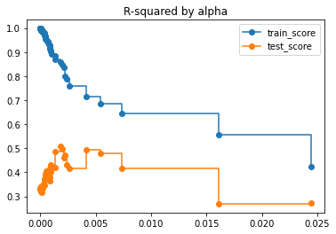
test_scores[0.33023514005921195,
0.33023514005921195,
0.33023514005921195,
0.33023514005921195,
0.33023514005921195,
0.33023514005921195,
0.33989623662035984,
0.33989623662035984,
0.33989623662035984,
0.3375476827601912,
0.3407502562058755,
0.3407502562058755,
0.3404566869733544,
0.3374201728915204,
0.3294493234267061,
0.3309675804676231,
0.3294493234267061,
0.3220988901962767,
0.3207644845939083,
0.31867688116264736,
0.3315133227055339,
0.330659303120018,
0.3334348667729443,
0.3337137303110721,
0.34737804367932534,
0.3448129009631634,
0.3461769600233623,
0.34807478132450853,
0.34506863238349283,
0.3658675677057428,
0.3738384171705572,
0.3767859708789002,
0.3830725039389472,
0.3952007681915851,
0.40503907381672744,
0.3847448715609173,
0.3891118745679958,
0.3928467868886516,
0.4042640798363476,
0.4015974472530024,
0.3640205854903058,
0.3811009772006224,
0.4152617606212555,
0.40073156628435425,
0.42957845006177786,
0.41970384860425103,
0.4183886584425567,
0.4876104326741413,
0.5081524504377486,
0.4979042154115587,
0.4591965609704547,
0.47294501371578745,
0.43038709152545673,
0.41744228965800056,
0.4923501729589913,
0.4788247151954669,
0.41815815226633946,
0.26935377968606145,
0.273134441660973]ix = test_scores.index(max(test_scores))
best_alpha = ccp_alphas[ix]
best_alpha0.00179259259259279regressor_ = DecisionTreeRegressor(random_state = 1234, ccp_alpha = best_alpha)
model_ = regressor_.fit(X_train, y_train)model_.score(X_train, y_train)0.8589647876821336model_.score(X_test, y_test)0.5081524504377486plt.figure(figsize = (15,15))
tree.plot_tree(model_,
feature_names = list(X_train.columns),
filled = True);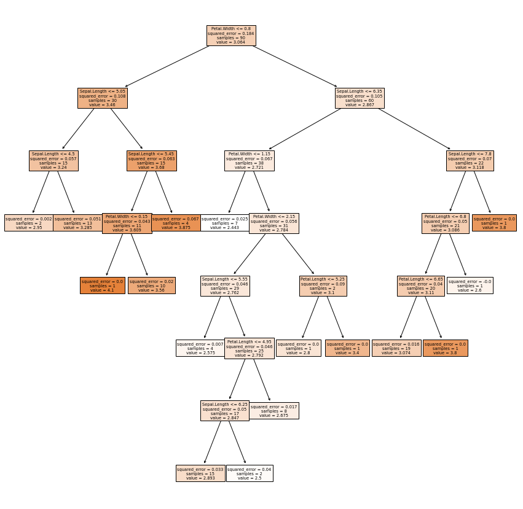